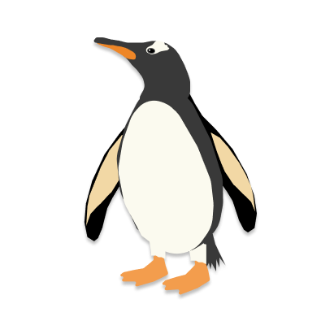
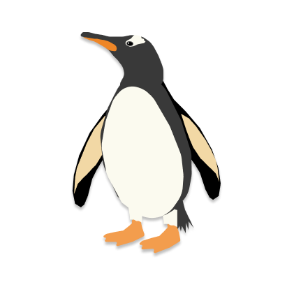

Penguin Park
ABOUT THE PARK
Penguin Park is designed to educate users on the current status of penguins. By navigating around the globe using the arrows on either side, you can explore the park and all of its inhabitants easily! While the park introduces seven different penguins from all around the globe (but mainly Antartica), it also holds many penguins popularized in the media, either through TV shows or movies or even just real life penguins just messing around with human equipment.
Either way, Penguin Park serves as home to both cute and quirky penguins. Hopefully you found them to be so as well!

 


ABOUT THE CREATOR
My name is Angelica Quach and penguins have been my favorite animal for the longest time. While many aquariums and zoos only have African penguins, I am hoping to travel to both Africa and Antartica in order to meet the penguins in their natural habitats. Hoping to cross it off my bucket list after airlines and cruises re-open again!
This project probably took me over 24 hours and was coded in HTML, CSS, and Javascript. The bulk of the time was not dedicated to coding — it was actually creating each penguin! The entire park contains 26 penguins, most of which also have a backside to them which I also created — so that’s probably over 50 penguins! I sometimes used reference photos to make certain images, but all the scenarios were thought up and rendered on my own.
Anyways, I’m really proud with how Penguin Park turned out after all my efforts to create it. Thanks for coming by!